助理之间会接力
@ 某人就是直接发给谁；没写 @ 的时候，调度员读你这句话挑人。回复里的 @ 就是交给下一个人的信号，接力链和调度轨迹一直挂在右栏。
现在的 Agent 大多是一个助手、一个输入框。RyHarness 是一群助理：性格能调，声音不一样， 长得也不一样——打字的时候爪子是真的落在键盘上的。聊得久了他们会认得你，像微信里的联系人，也像同事。
不是同一个助手换几个名字。性格、声音、形象、亲密度，都是能编辑、能被记住的东西。
你是「阿狐」，住在 zry 的电脑里。 性格 外向 0.8 · 严谨 0.4 · 幽默 0.7 · 主动 0.7 声音 沉稳男声（CosyVoice2 alex） 关系 熟面孔（认识 42 天） 当前 群聊「产品三人组」· 3 位助理 记得 上次改需求，他会先问一版时间线 语气 口语、短句、不写套话
16 个云端音色加 4 个系统音色，每一条都实测能出声。CosyVoice2 跨语种，粤语四川话也行；MOSS 能中英混读。开了自动朗读，流式写到句号就入队合成，不等整条消息出完。云端失败就落到系统语音，不弹报错。
6 种动物 × 8 种毛色 = 48 种组合。染色跑在 GPU 上，实时可切。闲置时偶尔眨一下眼或者笑一下；它动起来是什么样，见下一节。
亲密度是聊天轮次和 👍 / 👎 攒出来的。我们没做「好感度 +5」那种数值游戏——档位靠你们之间真实发生的事跨过去。生日和首次相遇也都记着。
不是 CSS 抖一抖。每个形象配了一套真的动作帧——AI 生成 4×4 帧表，构建期抠图、统一比例，切成 1024×1024 的精灵图，运行时逐格平移播放。打字时爪子落在键盘上，思考时头会偏一点。
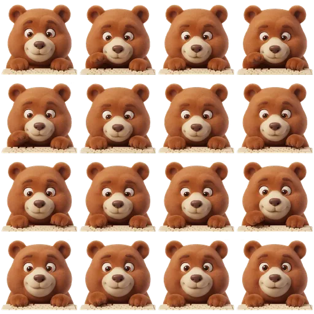
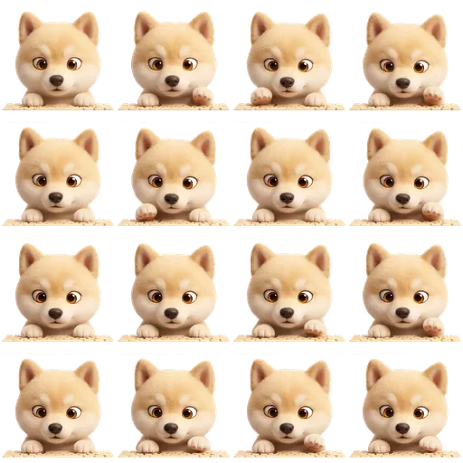
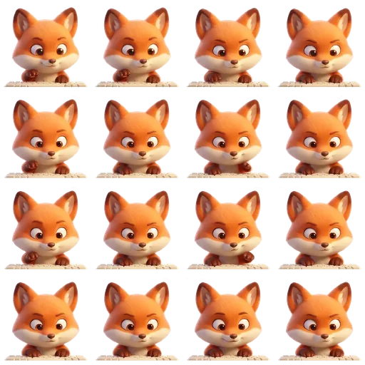
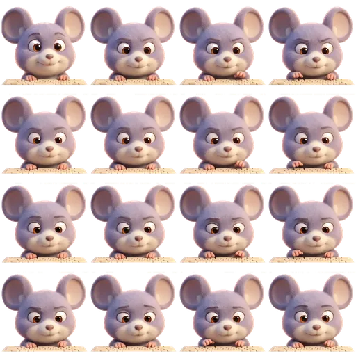
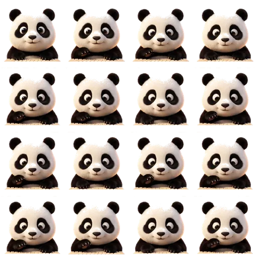
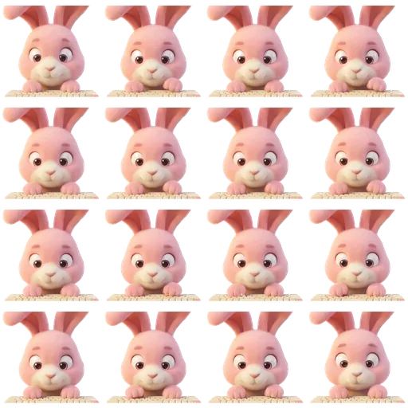
闲置时是静态图；剪影和 DiceBear 没有帧素材，仍走 CSS 微动效，两条路不叠加。系统开了「减少动态效果」就停在第一帧——那一帧本身就是完整的形象，停住仍然读得出是谁在干活。
长会话走窗口化，哨兵高度过去是猜的，滚动位置却是真实像素，两者一偏，你刚往上滚就被拽回最下面。现在量一次已渲染轮次的真实高度，哨兵与窗口用同一个高度，映射自洽。
产物点开不再另开一层。文件预览、记忆、经验手册、调度轨迹共用右栏，一条都不挤。
窄列时气泡落到操作条下沿，通道宽度按真实按钮数算，不再凭空占一截把正文盖住。
窗口再窄一点时，右栏收成覆盖式抽屉，聊天区原来会被硬挤掉 280px。
现在能用的 Agent 产品，基本都是一个通用助手加一个输入框。RyHarness 想做的是另一件事：助理有各自的性格，之间能互相接力，干完的活留在那儿，记忆归你自己管。
@ 直路由，没有 @ 时调度员按自然语言选路，接力链可视化有些事我们不做：不做通用云端助理，不做内容审查型社交，不做「假装有记忆」的演示。
性格之外的几件事：怎么互相接力、怎么记事、怎么把一句话变成一个项目。
@ 某人就是直接发给谁；没写 @ 的时候，调度员读你这句话挑人。回复里的 @ 就是交给下一个人的信号，接力链和调度轨迹一直挂在右栏。
抽出来的候选事实会比对相似度，决定新增、更新、删除还是跳过。召回时 embedding 余弦和 FTS5 各出一路，用 RRF 合并，再按时间衰减。👍 👎 会直接影响经验手册里的条目升不升级，每条都能追到具体哪一轮。
工具、路由、模型适配器、工作法（skill）都是插件。内核用 cordis 做依赖装配，effect 可逆：工具注册在 ctx.tools，路由注册在 RouteRegistry。在设置页关掉一个插件，它的工具和路由会真的被卸掉，工作法也跟着消失，不是改个配置文件糊弄过去。
说清你想要什么。小队挑几件事问你——是选项卡，不是表单——然后写出方案，落成工作区里的一个项目目录（README、完整方案、任务清单，还有一个能直接打开的首个页面），任务清单同时进你的待办。
三栏主界面：左边是像通讯录一样的助理，中间是聊天，右边是记忆、经验手册、调度轨迹和本会话产物。左侧导航里还有 RyVibe、插件，以及能改你名字和头像的「我的」。
正在输出的那位会真的动起来。气泡下沿是朗读、复制、点赞、点踩、引用、展开——窄列时它落到气泡下沿，不压正文。
@ 是一枚琥珀标签，跟正文里的网址一眼分得开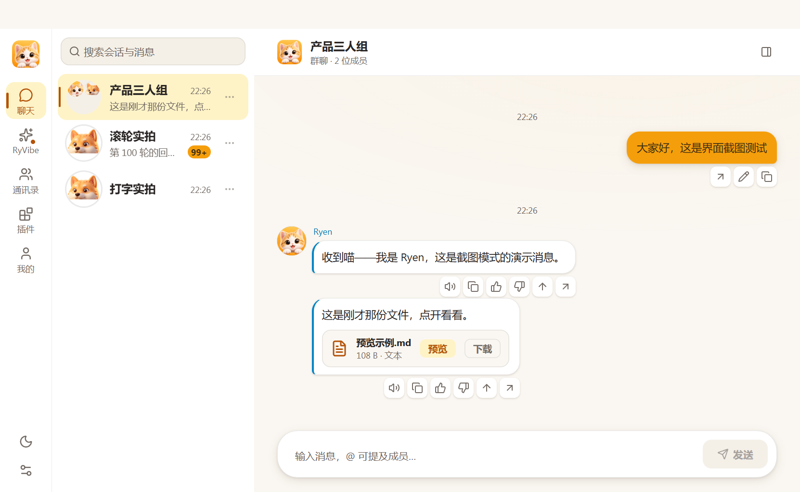
没有指定谁来做的时候，调度员读你的自然语言选路，回复里的 @ 就是交给下一个人的信号。
loop-guard 与 max-turns 触发时用警示色标出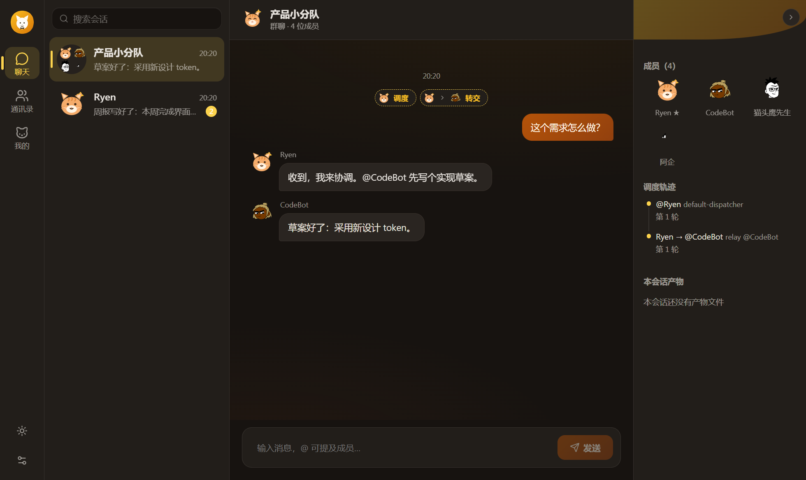
插件页把每一件东西摊开给你看：它在做什么、关掉会怎样。
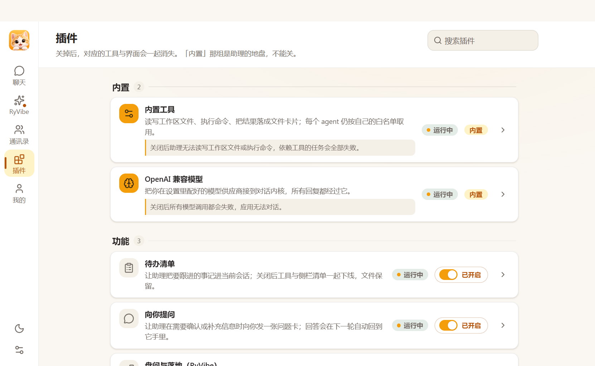
每个助理就是通讯录里的一条：头像、性格关键词、亲密度档位、现在用的哪个模型，一眼扫得完。
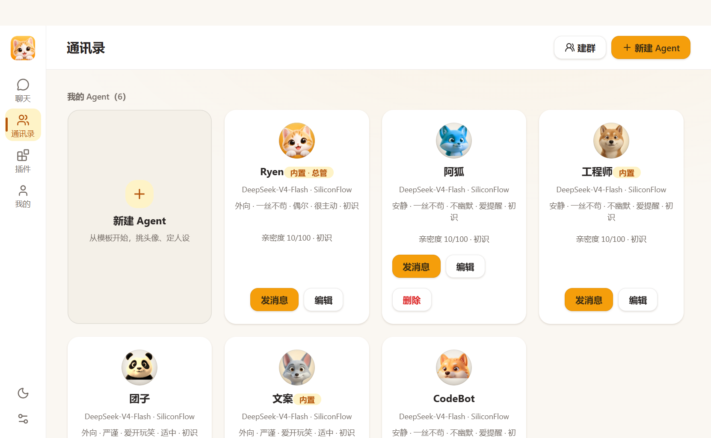
6 种动物 × 8 种毛色，一共 48 种。染色在 GPU 上跑，不额外打包资源，切换是实时的。
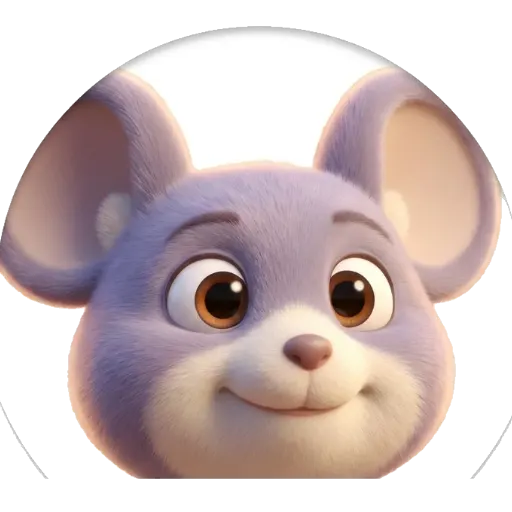
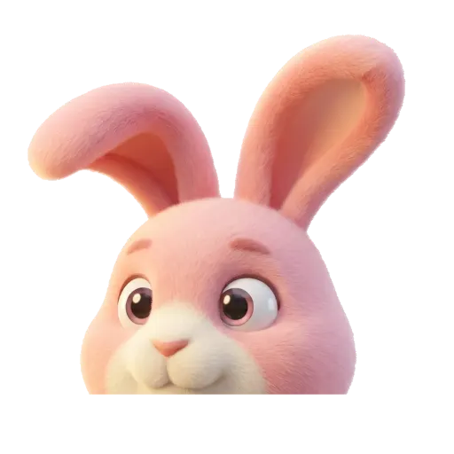
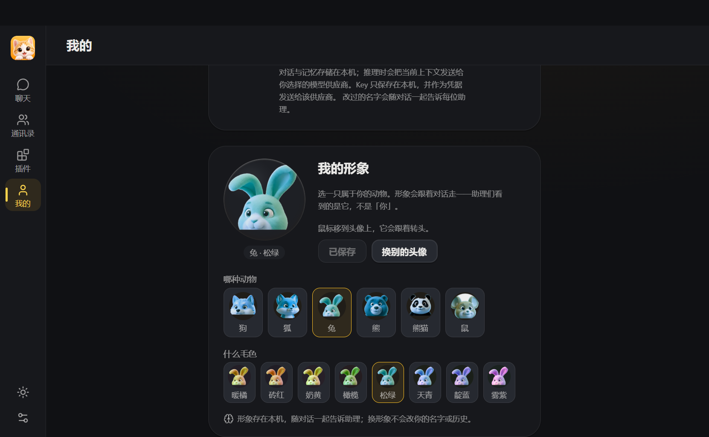
RyVibe 底下就是一个真实的群会话。盘问用的是选项卡，不是表单——不用你写，点一下就是答案。
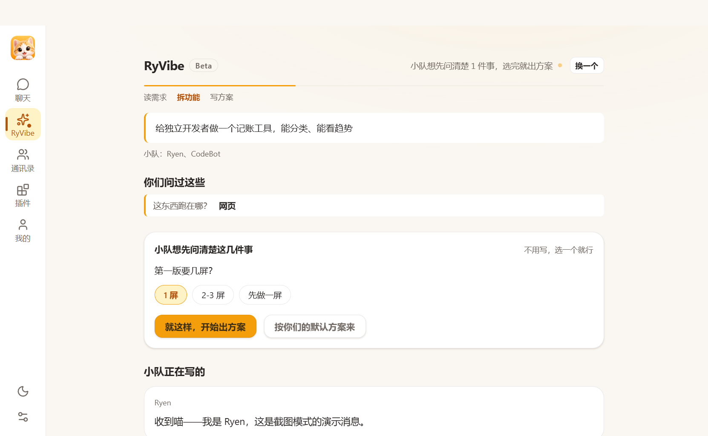
首启落种四个演示 agent 和一段演示会话——界面、记忆、经验手册都能点，只有真发消息才需要配供应商。
@ 谁就发给谁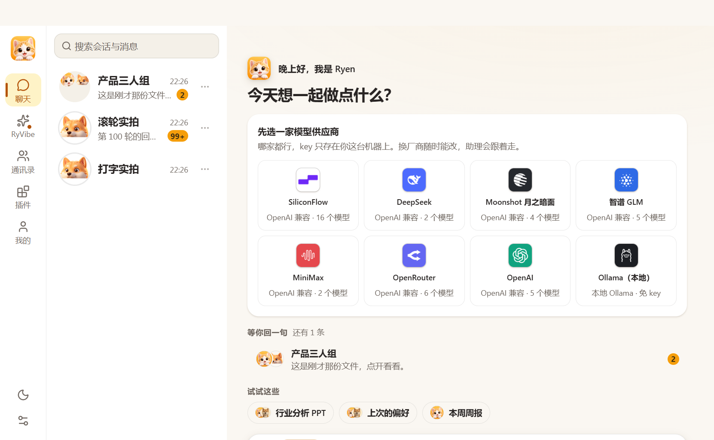
它有自己的一条管线：抽事实、召回、按时间衰减、反思、固化成手册。最后你都能看见，能改，能删。
mem0 式异步抽取：候选事实 → 相似度比对 → ADD / UPDATE / DELETE / NOOP。同一条事实被改写时不静默覆盖。
embedding 余弦 + FTS5 BM25（中文 bigram）双路召回，RRF 融合。用户画像单独注入每一轮提示。
放久了的旧事实权重会往下掉。召回有总预算，超了就这一轮不注入——宁可少召回，也不能拖慢第一个字。
ACE 式经验手册 + Reflexion 确定性反思 + 👍👎 反馈归因 + 定时巩固，每条经验都能追到出处。
论记忆引擎的深度，腾讯混元开源的 Hy-Memory 2.0 做得比我们深：L0–L7 八层写模型、事实版本化与冲突调和、任务/代码型记忆、图记忆，benchmark 也排在开源第一梯队。
我们强在别处：装完就能跑，不需要向量库、图数据库或 Python 运行时，断网也用得了；
记忆在界面里看得见、改得了，👍 👎 直接影响它升不升级；
召回有首 token 预算，embedding 的网络往返挪到开始输出之后才发生——这是桌面端「点了就有反应」的前提，引擎型方案一般不背这个约束。
两者不冲突。我们把「事实版本化 + 冲突消解、经验卡结构化、意图记忆与过期降级」三件事列进了路线图。
模型层用的是 OpenAI 兼容适配器。路由、记忆、调度、工具循环、持久化都是自己写的——这些市面上没有能直接接的。
插件宿主是 Cordis（cordiverse/cordis）：
一个插件就是一个 fiber，运行时挂上去、卸下来。
vendor/ 里是它的裁剪改名版（最早取自
deepseek-harness），
重命名成 @ryharness/cordis 之类；上游代码我们一行没改，MIT 法条都留在各 vendor 目录的 LICENSE 里。
中间两层是我们自己写的：路由、记忆、调度、工具循环、持久化。这些市面上没有能直接接的，只能自己来。
@ryharness/agent@ryharness/group@ryharness/session@ryharness/memory@ryharness/evolve@ryharness/tools@ryharness/llm每一行都能用仓库里的脚本复现。桌面端要「点了就有反应」，毫秒级的差别就是体感的差别。
复现方式：pnpm bench / pnpm perf / pnpm --filter @ryharness/desktop capture。
记忆召回的 embedding 冷启动为早期观测（164 ms，带 800 ms 超时与预算兜底），未复现，仅作量级参考。
凭据存在系统密钥库里，API 每次启动换一把新钥匙，浏览器权限默认全部拒绝。这些是代码里写死的，不是宣传语。
只走系统密钥库（Electron safeStorage）或环境变量。不进数据库、不进日志、不随安装包分发。
随机生成 256 位一次性 token，WS 与 REST 都校验；渲染层 sandbox + contextIsolation，无 Node 集成。
渲染层浏览器权限默认拒绝（Electron 默认是自动批准一切），只放行写剪贴板。shell_exec 默认不在任何模板的白名单里。
消息、记忆、经验手册、反馈全在一个 SQLite 文件里。资源服务带 X-Frame-Options: DENY，别的网页不能把界面套进 iframe。
没有闭源壳子，也没有遥测。fork 走，改成你自己的样子也行。
# 需要 Node ^22.19 或 >=24（持久化依赖内置 node:sqlite）与 pnpm 11 git clone https://github.com/zryshuaige/RyHarness.git cd RyHarness pnpm install pnpm build pnpm --filter @ryharness/desktop start # 生产模式 pnpm --filter @ryharness/desktop dev # 开发模式（Vite HMR + Electron）
提交前请跑 pnpm verify（五道门禁：跨包断言 / 没声明的依赖 / 重复代码 / lint 预算 / NOTICE 里的数字）与 pnpm test。
全都拿仓库事实核对，对不上就红。裁剪与改名的逐项记录在 NOTICE.md。
模型这边不挑：任何 OpenAI 兼容的供应商都能接，改数据目录下的 config/providers.json 就行；向量模型是单独一条配置，换供应商不会偷偷沿用别人的向量。
这是开发者预览版，改动很快，会有破坏兼容性的变更——升级前先备份数据目录。